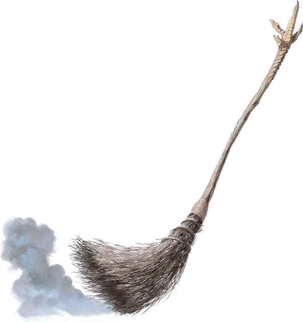

Танцующая метла Бабы Яги
Baba Yaga’s Dancing Broom
Чудесный предмет, необычный (требуется настройка)

Рекомендованная стоимость 400 зм
Эти магические метлы создавала лично архифея Баба Яга. Ни одна из них не выглядит точно так же, как другая. Пока вы держите метлу в руках, вы можете действием Магия превратить её в Живую метлу под вашим контролем. После оживления метла мгновенно перемещается в ближайшее к вам незанятое пространство. Ожившая метла действует сразу после вас по счёту Инициативы и остаётся оживлённой, пока вы Бонусным действием не произнесёте командное слово, чтобы снова сделать её неживой.
В ваш ход вы можете мысленно отдавать команды оживлённой метле, если она находится в пределах 30 футов от вас, и вы не имеете состояния Недееспособный (действий не требуется). Вы решаете, какое действие она совершит и куда переместится в свой следующий ход, либо даёте общий приказ — например, атаковать ваших врагов или охранять определённое место.
Если Хиты метлы опускаются до 0, она разлетается вдребезги и уничтожается. Если же до потери всех Хитов метла снова становится неживой, она восстанавливает все свои Хиты.